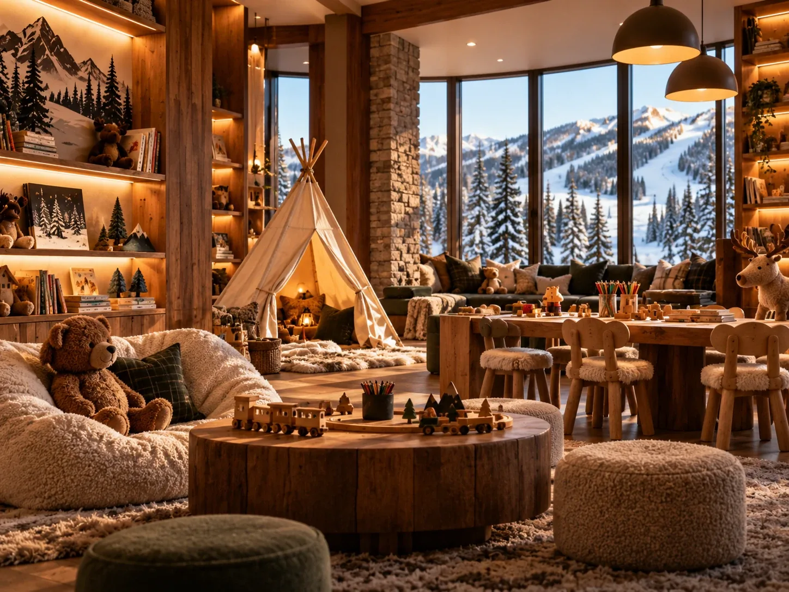

A family ski week is won or lost in the ninety minutes between waking up and getting on the lift. Most of what makes that go well is decided when you book, not when you arrive.

Park City is a strong family resort. The learning terrain is good, the ski school is large and well run, and the mountain has enough gentle intermediate ground that a family can ski together once the children are past the first stage.
The parts that go wrong are almost always logistical rather than anything to do with the skiing.
Book ski school when you book the lodging
During a peak week, ski school fills like the lodging does. Children's group lessons and any form of childcare are capacity-limited, and the good time slots go first.
Treat it as part of the same booking decision rather than something to sort out nearer the time. Arriving in February without a lesson booked, during the busiest week of the year, means taking whatever is left.
The morning is the whole problem
Getting several children into base layers, salopettes, boots, helmets and gloves, then to a lift, takes far longer than anyone plans for. Every structural thing that shortens it is worth real money.
- A short walk to the lift. This is the single biggest one. Ten minutes in boots with a reluctant six year old is a different experience from three.
- Ski storage at the base. Not carrying eight sets of skis and boots through a lobby twice a day changes the mood of the week.
- A kitchen. Breakfast at your own table, at your own pace, beats a restaurant queue with children who want to leave.
- Laundry in the unit. Wet gloves and base layers are a daily problem on a seven night trip. Solving it in the unit is better than solving it in a laundromat.

The midday reset
Small children run out of energy before lunch and recover quickly if they get warm and sit down. If you are staying close enough to go back to the unit, you get that reset for free.
Families who can do this tend to still be skiing properly on day five. Families who cannot often stop skiing by Wednesday, which is an expensive way to spend a lift ticket.
Days when nobody wants to ski
Plan for at least one. Pools, an arcade, a spa afternoon and an early dinner all do the job, and a resort that has those on site saves you organising transport on the day somebody announces they are done with skiing.
More in the guide to days off the mountain.
When comparing two places with children in the group, ask how long the walk to the lift is, in boots. That answer predicts more about your week than the nightly rate does.
Common questions
Should I book Park City ski school in advance?
Yes, particularly for a holiday week. Children's lessons and childcare are capacity-limited and fill at the same time the lodging does. Book it when you book the accommodation.
Is Park City good for young children?
Yes. The learning terrain and ski school are well set up, and there is plenty of gentle intermediate skiing for when a family starts skiing together. The logistics of getting to the lift matter more than the terrain.
What makes the biggest difference on a family ski trip?
A short walk to the lift, ski storage at the base, a kitchen for breakfast and laundry in the unit. Those four shorten the morning and make a mid-week reset possible.
The villa this guide comes from
We own a Premier Two-Bedroom Villa inside Westgate Park City Resort, in Canyons Village. It is 1,100 square feet, two king bedrooms and two queen sleeper sofas, so it sleeps eight in one unit. Full kitchen with a centre island, two bathrooms, in-unit laundry, and a short walk to the Red Pine Gondola.
It is available for Presidents' Week 2027, 13 to 20 February, and we rent it ourselves rather than through an agency.